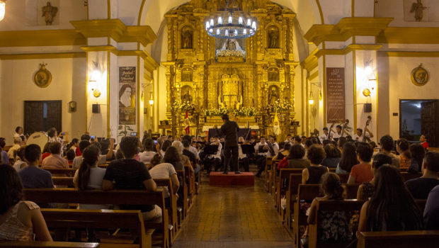

Para determinar las fechas de la Semana Santa 2025, se toma como referencia la primera luna llena que ocurre después del equinoccio de primavera en el hemisferio norte. El domingo siguiente a ese evento astronómico es cuando se celebra la Pascua de Resurrección. El Domingo de Ramos, que marca el inicio de la Semana Santa, tiene lugar el domingo anterior a esa luna llena.
La Semana Santa en Bolivia es una de las celebraciones religiosas más importantes del país, siendo una tradición católica y con elementos culturales. Aquí te va un resumen sobre la historia, las tradiciones, los lugares turísticos y las recetas gastronómicas de nuestro querido país Bolivia. Sin más que decir, ¡comencemos!
Los días más importantes son el Triduo Pascual, es decir, el conjunto de tres días en los que tuvieron lugar la pasión, muerte y la resurrección de Jesucristo. Son el Jueves Santo, Viernes Santo, Sábado Santo y Domingo de Resurrección.
Domingo de Resurrección o Domingo de Pascua Este es el día más importante de la Semana Santa, ya que para la iglesia católica es la representación de la transformación de Jesús. Es el momento en el que asciende al cielo, un día de reflexión y fé. Se celebra la resurrección de Cristo.
En la Biblia, la Pasión de Cristo está narrada a través de una serie de acontecimientos que tienen su momento inicial con la cuaresma. En este período, que atraviesa los cuarenta días, la Biblia indica que se debe guardar ayuno, oración y sacrificio, hasta que concluye la Semana Santa con el domingo de Pascuas
Los principales entre estos símbolos son: las palmas y ramos; el vino y el pan; el lavatorio de pies; el cirio pascual; el color púrpura; y la cruz.
En fin te invito a darle un vistazo a las demas pagínas para que puedas aprender sobre la historia las recetas de nuestra querida Bolivia para que las prepares en casa, tambien asi puedes ir a turismo lugares que puedes visitar sin durante la semana santa asi mismo puedes encntrar significados o simples explicaciones sobre las tradiciones de la semana santa